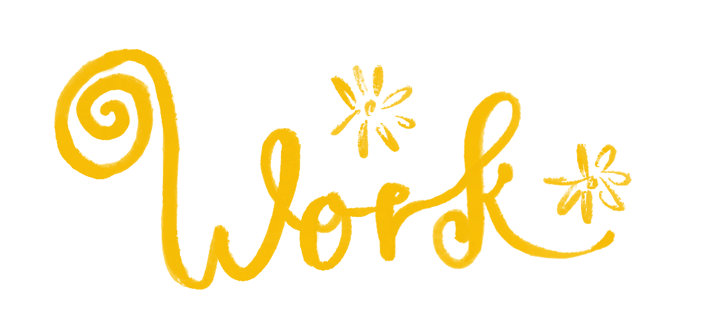
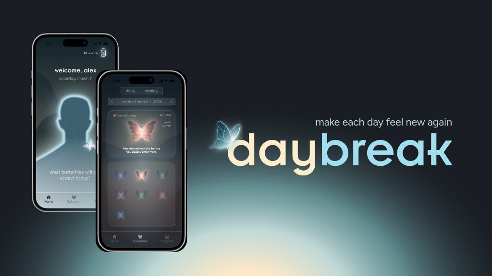
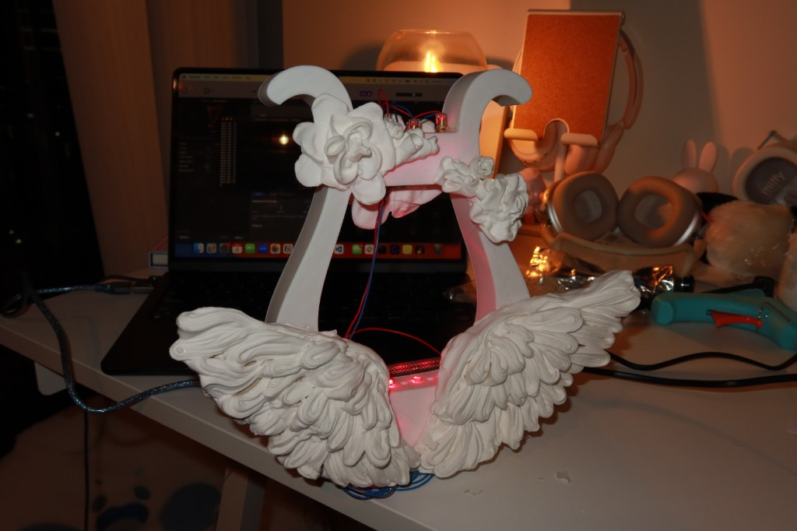
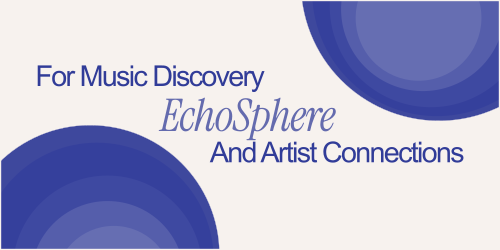
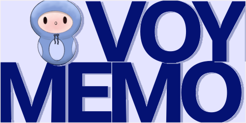

Spring 2026
Make each day feel new again. An app that reframes daily interactions through a gentle, reflective lens. Scroll through the slidedeck to see the full case study.
Tools:

Spring 2026
Heavenly Lyre—invisible strings, MIDI via Arduino and Python, Genshin-inspired build. CAD, soldering, and air-dry clay wings.
Tools:

Fall 2025
A music discovery platform that connects artists and listeners through innovative audio experiences.
Tools:

Fall 2025
A research-based design process exploring personalized comfort for children overcoming medical-based trauma.
Tools:

Fall 2024
Chow Club turns cooking into an adventure for the next generation.
Tools:

Spring 2025
Client work with Georgia Tech Science Olympiad—seamless coordination for admins and coaches.
Tools: